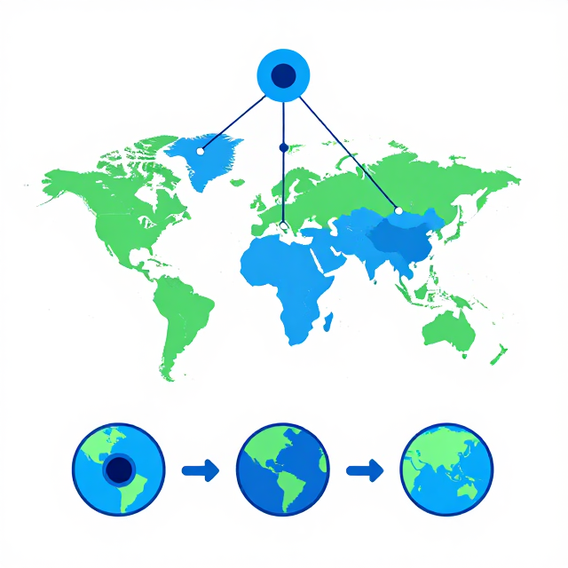

看不見的毯子
溫室氣體與全球暖化
Level IV｜國中 13–15 歲
大氣中那層看不見的毯子，怎麼來的？
四節課，從基林曲線到減碳承諾，逐步揭開答案。
看不見的毯子
溫室效應與基林曲線
如果沒有溫室氣體，地球長什麼樣？
沒有溫室氣體
−18°C
海洋全部結冰、生命幾乎無法存在
有天然溫室效應
+15°C
適合生命存在的「剛剛好」溫度
33°C 的溫差來自天然溫室效應。
問題不在「有」，而在「過量」 — 就像被子太厚會中暑。
溫室效應如何運作？
基林的堅持：1958 年起的世界級紀錄
把時間拉長：80 萬年冰芯告訴我們什麼？
溫室氣體家族點名
誰最強？誰最多？
溫室氣體家族：壽命與暖化能力
| 氣體 | 全球暖化潛勢（百年尺度） | 大氣壽命 | 關鍵特性 |
|---|---|---|---|
| 二氧化碳 | 1 | 數千年 | 慢性病：累積且難移除 |
| 甲烷 | ≈ 28 | 約 12 年 | 急性病：減量見效快 |
| 氧化亞氮 | ≈ 273 | 約 121 年 | 量少但威力強 |
| 氟化氣體（氫氟碳化物等） | 數百到數千 | 數十至數千年 | 主要來自冷媒 |
減甲烷可短期降溫（10 年見效）；減二氧化碳像還百年房貸。
甲烷偵探：最大來源你猜到了嗎？
臺灣排什麼最多？
難易不同
全球與臺灣減量的現實
全球暖化潛勢的真實意義
若你要減 100 公噸二氧化碳當量，可選：
選項 A
少燒煤
100 公噸二氧化碳
需要能源轉型
選項 B
少排甲烷
3.6 公噸（100÷28）
堵漏氣管線、掩埋場封蓋
選項 C
少排氧化亞氮
0.37 公噸（100÷273）
改變施肥技術
暖化效果相同，難度與社會影響大不同。政策科學的核心是找「每元減最多」的選項。
臺灣產電結構轉轉轉
倫理兩難辯論：誰該先減？
「先進國家排了兩百年才致富，現在要求開發中國家減碳，公平嗎？」
主張（C）
具體立場：誰該先減？減多少？
證據（E）
歷史累積排放：美國加歐盟約 40%；當前年排放：中國第一
理由（R）
歷史正義 vs 當下現實的拉扯
背景原則：共同但有差別責任 — 各國責任有別，共同行動不可少。
成功案例：蒙特婁議定書

我的減碳承諾
校園、家庭、社區專題
森林與紅樹林：地球最老的碳捕捉機
陸地森林
7.6 億公噸
全球年淨吸收（約全球年排放 1/6）
一公頃溫帶森林每年固碳 2–5 公噸
紅樹林（藍碳）
4 倍
單位面積固碳能力是陸地森林的 4 倍
一公頃成熟紅樹林每年 6–8 公噸
陷阱：新樹固碳要 20–30 年才見效；森林火災會釋放二氧化碳；砍伐若大於種植，淨效果為負。
提案書結構：主張 – 證據 – 理由
主張（C）
具體、可行、可衡量
範例：每週一日蔬食午餐
證據（E）
至少引用 2 個資料點
範例：農業甲烷佔 40%、牛肉 vs 蔬食碳足跡
理由（R）
連結科學原理
範例：減牛肉攝取 → 減反芻動物甲烷
加上行動步驟（時程、負責人、資源）與成效指標（節電度數、二氧化碳當量）。
全校方法：四面向檢核
治理
- 校園碳盤查小組
- 用電用紙廚餘公開
課程
- 跨科專題
- 碳素養週
校園營運
- 蔬食日、廚餘堆肥
- 校園植樹計算碳匯
社群
- 淨零市集、紅樹林志工
- 家庭碳足跡挑戰
互評規則：每組 90 秒閃電提案，全班用 4 格檢核表評分。
後設認知與承諾簽署
請於學習單寫 50 字以上反思，並簽署個人承諾書。
三個關鍵字，一起記住
過量讓地球發燒
全球暖化潛勢量化比較
主張、證據、理由
氣候變遷不是被解決的問題，是需要持續選擇、持續行動的過程。